The answer was only
part of the work.
Separate observations find their references. Comparison, sequence and context are reconstructed into one understandable task.
Engineering software / ARTIFACTS
Built for engineering where almost right is still wrong.
Follow the constructionSeparate observations find their references. Comparison, sequence and context are reconstructed into one understandable task.
The completed task clears. Different evidence enters from another direction, but the same relationships have to be reconstructed.
Temporary evidence leaves while its relationships stay. The retained structure accepts new observations, gains repeatable states, and opens into the positions occupied by real ARTIFACTS interfaces.
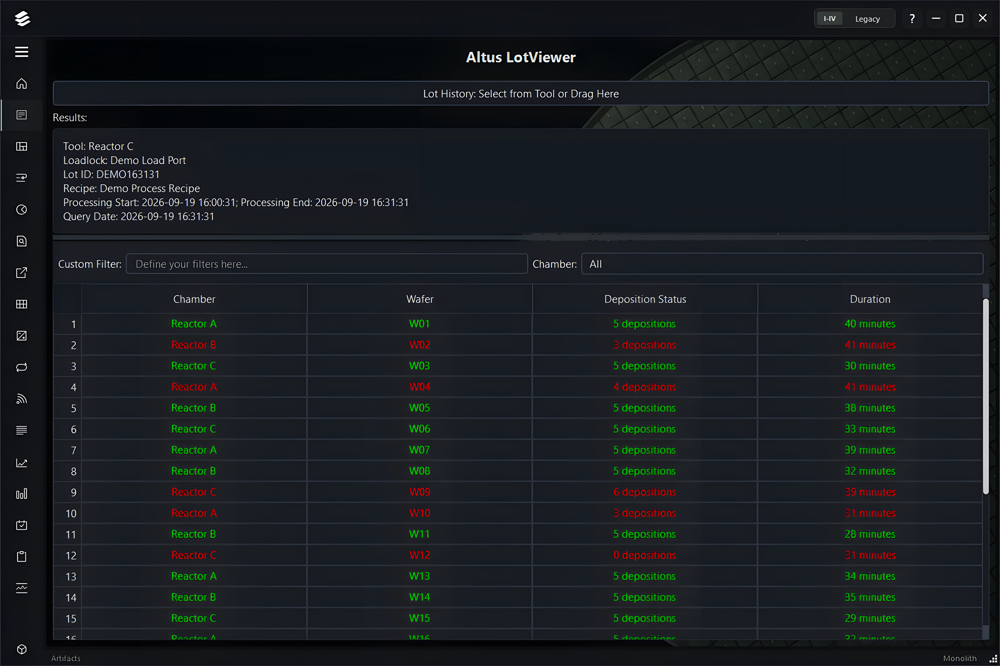
Process events are only useful in sequence. Align timestamps, wafer states and durations around the same lot. The animation illustrates the operation; it is not a live application result. A lot is more than its event list. Every event keeps its context.
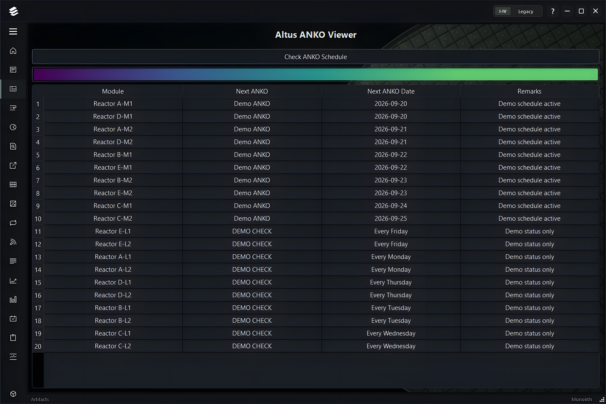
Retrieve ANKO schedules across Altus equipment. Read dates in the context of the equipment they belong to. The animation illustrates the operation; it is not a live application result. Individually correct. Difficult to compare. One date. Every equipment lane.
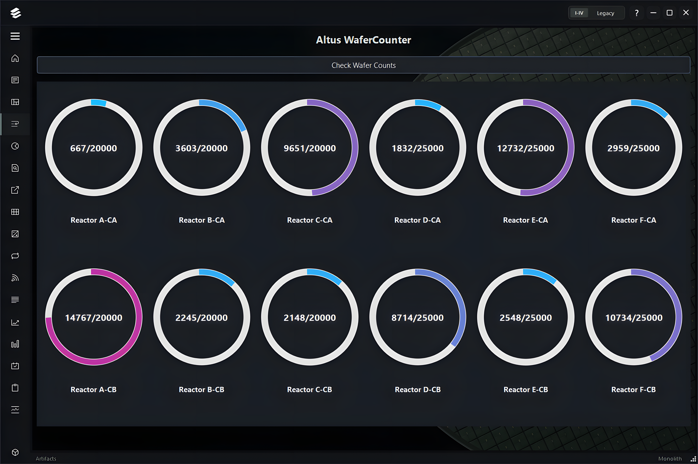
Collect wafer counts from equipment logs. Review chamber usage as an input to maintenance planning. The animation illustrates the operation; it is not a live application result. Every passage leaves a record. Chamber usage, with its history.

Measurements acquire meaning when their positions are retained. Resolve a contour field from the wafer samples. The animation illustrates the operation; it is not a live application result. The samples are points. Read the region in the whole.
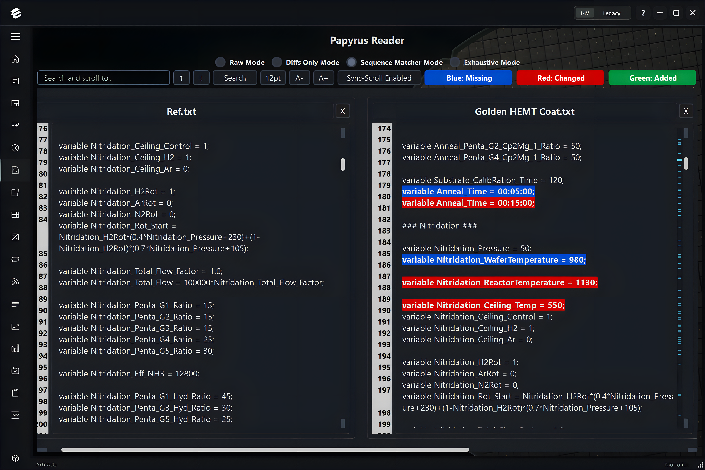
This illustrative comparison uses named XML structures from Papyrus Reader. In the raw excerpts, corresponding properties occupy different lines. Matching node and property identities aligns them. Category and unchanged severity values agree; EnablePrint changes from 1 to 0 and Severity from 2 to 3. The full original interface opens and closes the sequence. Example values explain the operation and are not results from the displayed capture.

Navigate workcentres and parameter groups to locate the required SPC chart. The animation illustrates the operation; it is not a live application result. The chart is somewhere in here. The search becomes a path.
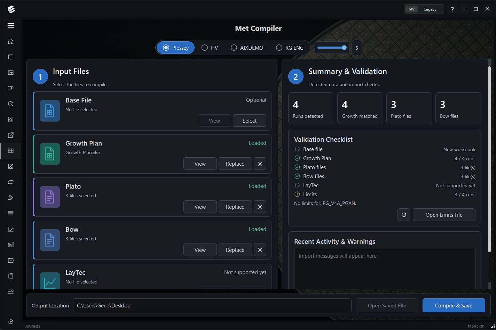
Gather measurement files, apply predefined calculations and compile the result into a consistent reporting structure. The animation illustrates the operation; it is not a live application result. Separate sources. One reporting task. A report with a traceable beginning.
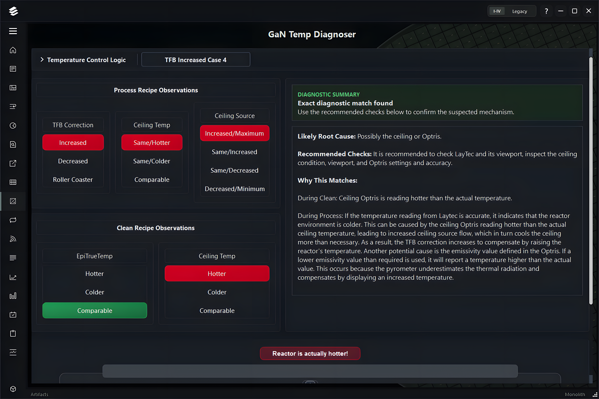
Bring process and clean-recipe observations into one diagnostic view. Follow the recommended checks before drawing a conclusion. The animation illustrates the operation; it is not a live application result. The observation stays in view. A check. Not a conclusion.
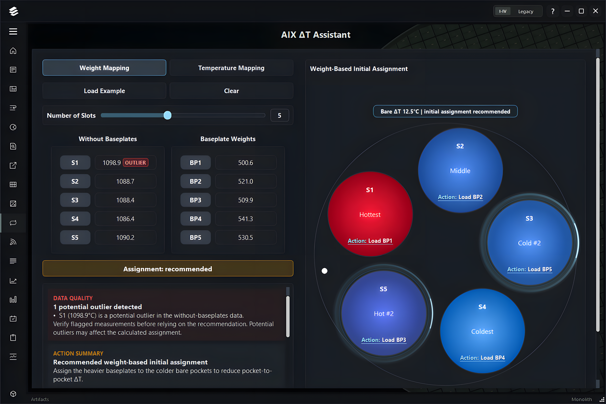
Use weight and temperature inputs to guide baseplate swaps. Follow each plate from its current position to its new seat. The animation illustrates the operation; it is not a live application result. The inputs have a physical consequence. BP3 and BP5. Exchanged.
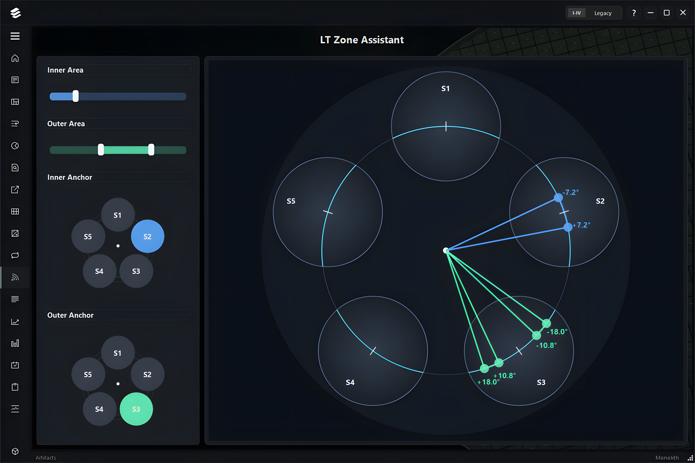
Map LayTec inner and outer zones within one coordinate system. Review each boundary in relation to the whole. The animation illustrates the operation; it is not a live application result. Two references. One geometry to establish. Every boundary has a counterpart.
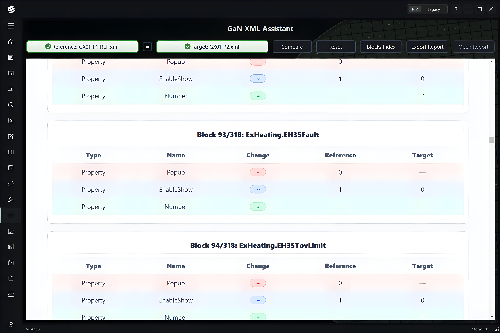
Match properties between reference and target configurations. Read changed settings and constants in context. The animation illustrates the operation; it is not a live application result. A setting belongs to a structure. The difference keeps its parent.
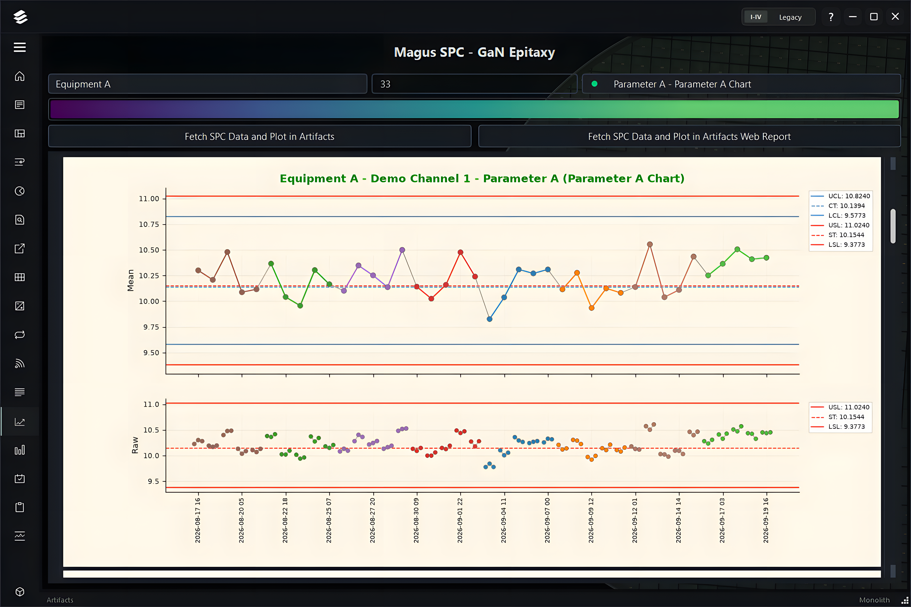
Bring configured GaN SPC charts and parameter states into the same review. The animation illustrates the operation; it is not a live application result. The process is larger than one chart. Attention without losing the picture.
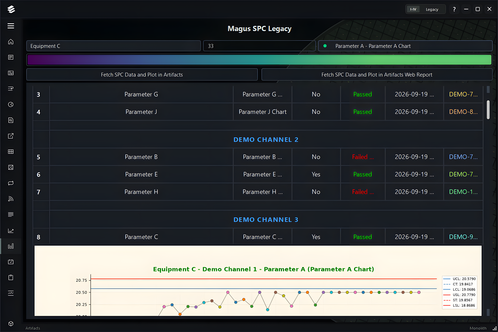
Retrieve legacy SPC parameter states and charts within the established review workflow. The animation illustrates the operation; it is not a live application result. The record comes in different forms. Parameter. State. Chart. Together.
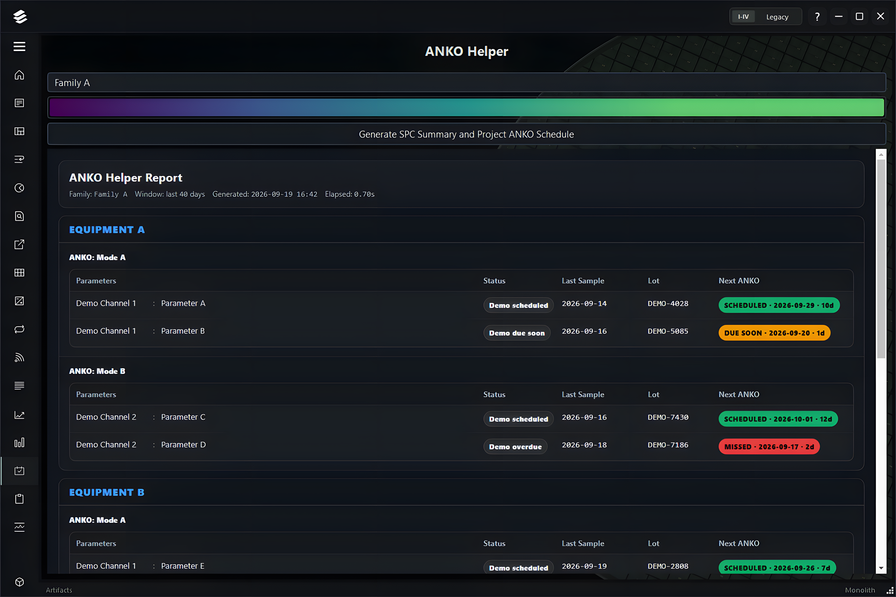
Align ANKO status and due dates by equipment before deciding what needs attention. The animation illustrates the operation; it is not a live application result. Status needs a place in time. The next action becomes visible.
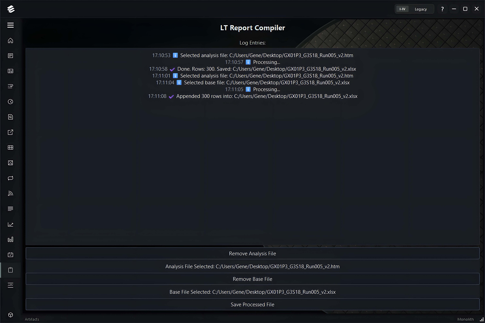
Assemble LayTec source information into an engineering report without rebuilding the reporting structure each time. The animation illustrates the operation; it is not a live application result. The analysis exists. The workbook needs it. Append the result to the record.
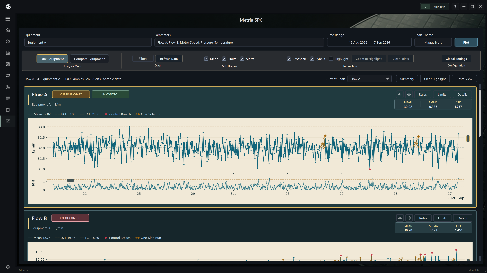
Inspect equipment parameter traces together. Follow one time window across the signals while retaining each chart. The animation illustrates the operation; it is not a live application result. Five signals. Five separate views. Every trace. The same moment.
ARTIFACTS began when I realised engineering itself was one of them.
What repeated, I automated.
What stood in the way, I rebuilt.
ARTIFACTS is the evidence that I never accepted the way things were as the way they had to stay.